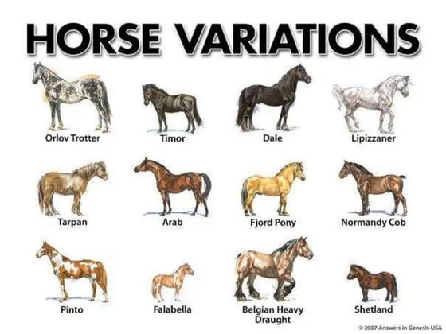
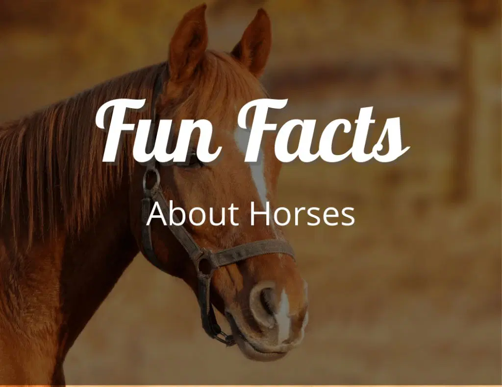

This is the homepage of my website.
TYPES OF HORSES
There are hundreds of horse breeds found around the world, each uniquely adapted to their local environment and role in human society.
Horses vary widely in appearance, size, and conformation, reflecting the particular conditions of their breed characteristics. Some are strong and heavy, ideal for farm work or pulling loads, while others are swift and agile, perfect for racing or equestrian sports.
Many of North America’s most popular horse breeds are ones developed in Canada or the United States, while others have European, Asian or South American lineage.
Although most North Americans no longer rely on equids for work and transportation, the continent is still home to millions of horses. Modern horse owners primarily use horses for recreation, companionship, and competition.
This article will discuss the most popular horse breeds in North America, particularly on Canadian and United States populations.
TYPES OF HORSES



ALL ABOUT HORSES
DETAILS


Although horses are such well-known animals, the following facts may surprise you!
Horses can't breathe through their mouth.
Horses can sleep standing up.
Horses have excellent hearing.
Horses have a nearly 360-degree field of vision.
Horses have lightning fast reflexes.
Foals can walk and run within a few hours after birth
They are majestic, strong and can display a broad range of emotions.
Whether they're around humans or other horses, they are amazingly communicative and thrive in social settings.
These qualities are part of the reason why horses can develop such a strong bond with humans.
Horses can see only two of the visible wavelengths in the light spectrum because they have only blue-sensitive cone cells
and yellow-sensitive cone cells. Thus, they see blue, green, and variations of the two colors, but do not see red
\In simple terms, horses eat grass and hay or haylage, but salt, concentrates and fruits or vegetables can also enhance their diets,
depending on the required work regime and available feed.
Yes! Horses are known for their intelligence and ability to communicate.
They are also very social animals who enjoy spending time around other horses.
Horses are highly evolved mammals that are capable of complex behaviors such as
learning from experience and communicating through body language.
FUN FACTS
FUN FACTS



Anyone who has interacted with a horse knows they are magnificent animals.
Horses have been a part of our lives for thousands of years as companions, working animals and athletes in equestrian sport,
to name a few. Although horses are such well-known animals, the following facts may surprise you!
Horses are obligate nasal breathers.
This means that they are unable to breathe through their mouth as humans can.
Horses can only breathe through their nose.
Horses have a “stay-apparatus” which is a system of tendons and ligaments that allows the horse to lock their legs in position so they can relax without falling over.
When not sleeping, horses also use this apparatus to rest while standing for long periods of time.
This allows them to conserve energy while standing so they are ready to take flight if needed.
It is a myth that horses never lay down – they do spend a short amount of time each day laying down for deeper sleep.
On average, horses sleep two and a half hours per day.
simple chart
| life span |
height |
weight |
average speed |
| 25-35 yrs |
1.4-1.6 m
| 200 pounds |
72 kmph |